Introduction
Overview
The use of isotopically labeled tracer substrates is an experimental approach for measuring in vivo and in vitro intracellular metabolic dynamics. Stable isotopes that alter the mass but not the chemical behavior of a molecule are commonly used in isotope tracer studies. Because stable isotopes of some atoms naturally occur at non-negligible abundances, it is important to account for the natural abundance of these isotopes when analyzing data from isotope labeling experiments. Specifically, a distinction must be made between isotopes introduced experimentally via an isotopically labeled tracer and the isotopes naturally present at the start of an experiment.
The Labeled LC-MS Workflow factors out the contribution from the Natural Abundance (NA) of each element from the signal of each isotopologue peak obtained from LC-MS techniques in a labeling experiment. It provides visualization for fractional enrichment and pool totals for single as well as dual-labeled data. It also allows you to download an output Excel Workbook with worksheets containing the raw abundances, raw intensities, fractional contributions and corrected isotopologues of the metabolites belonging to different pathways based on the library data provided.
Scope of the app
- Performs NA correction on data from LC-MS experiments.
- Supports data from single (2D, 13C, 15N and 34S) as well as dual-labeled experiments.
- Plots fractional enrichment, pool total and NA corrected intensity plots for a selected metabolite.
- Generates a consolidated Excel workbook of outputs.
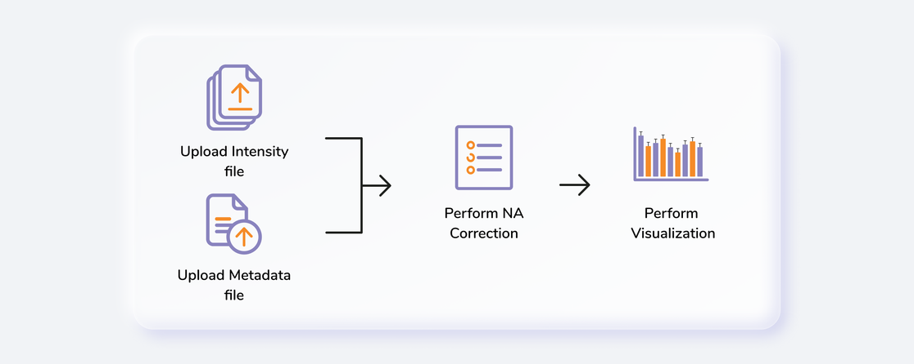
Getting Started
User Input
Labeled LC-MS Workflow requires the following two files as input:
Intensity file
The intensity file should be in CSV format as shown in Figure 1. The .csv file exported after peak picking in El-MAVEN is the input file.
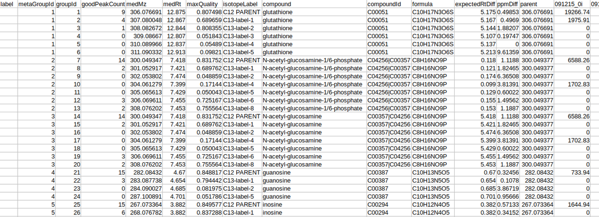
Cohort file
The cohort file is optional and is used for generating visualizations. In case you only want to perform NA correction, you can skip this step. The cohort file should be in .csv format as shown in Figure 3. This file should contain two columns, Sample containing sample names along with Cohort for its cohort information.
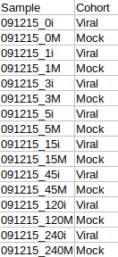
Steps involved in data processing
- Upload intensity file obtained from El-MAVEN
- Set analysis parameters and perform NA correction
- Download NA corrected output files
- Visualize fractional enrichment, pool total and NA corrected intensity plots
- Download consolidated output workbook using a library data
Caveats
- All the samples present in the intensity files should also be present in the cohort file.
- The cohort file is optional but visualizations will only be generated if this file is provided.
- If using the Edit NA Option, the natural abundances of all the isotopes of an element should sum to 1.
- The library file is not required for NA Correction.
- The name of the metabolites should match exactly between the input and the library file.
Tutorial
Upload files
The Upload Files tab allows you to upload the input files required for processing through the app. Once the files have been uploaded, click on Run. This will validate and process the uploaded files and give error messages or warnings if the format or data in files are incorrect. You can also run the demo files directly by clicking on Run Demo Files.
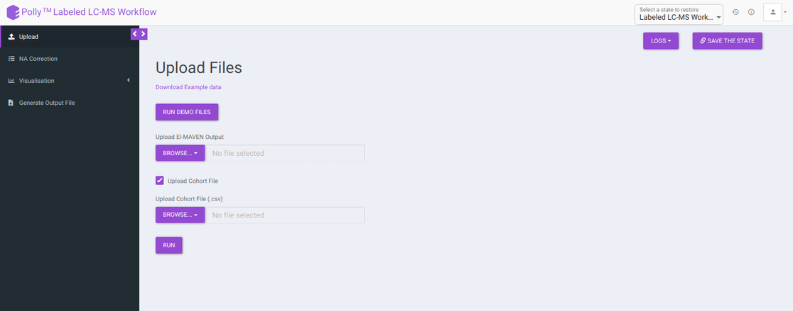
Cohort Creation Interface
If you do not wish to create a cohort file, you can utilize the cohort creation interface that allows you to enter the cohort information on the app itself. Upload your intensity file and uncheck Upload Cohort File option. Once the intensity file is uploaded, click on Run and a cohort creation interface with sample names with input files will open as shown in Figure 4. After entering the cohort information, click on NA Correction on the top left side to be taken to the NA correction interface.
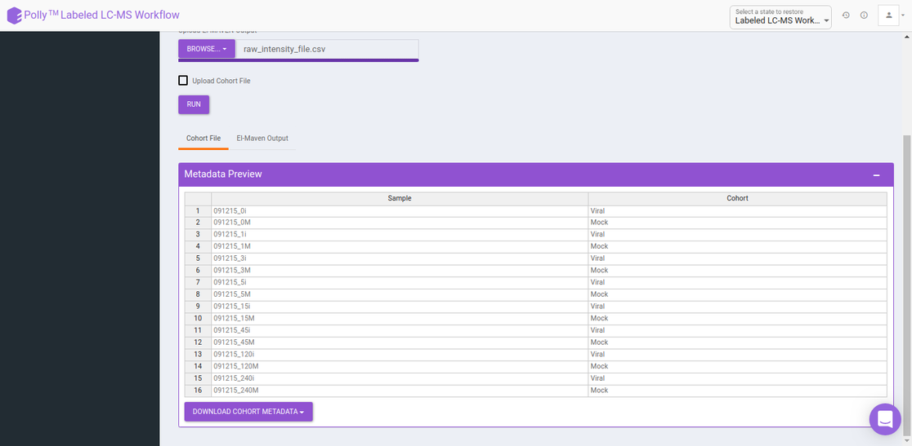
NA Correction
Isotopologue identification and quantification of thousands of metabolites in the metabolomic experiments can provide a wealth of data for modeling the flux through metabolic networks. But before isotopologue intensity data can be properly interpreted, the contributions from isotopic natural abundance must be factored out (deisotoped). This is referred to as natural abundance (NA) correction. The various analysis parameters for performing NA Correction shown in Figure 5 are defined below:
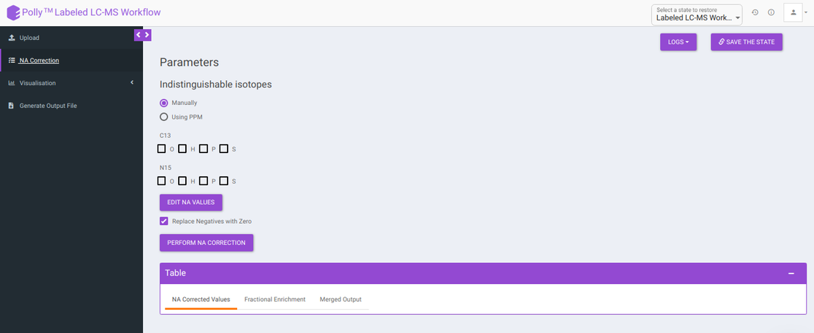
-
Indistinguishable isotopes: Indistinguishable isotopes can be corrected for natural abundance by electing either of the following options:
-
Manually: You can manually select a standard list of indistinguishable isotopes with respect to the labelled isotope for NA correction.
-
Using PPM: You can enable auto detection of indistinguishable isotopes, by selecting Using PPM option and providing PPM resolution of the mass spectrometer used for the experiment.
-
-
Edit NA values: Default NA values used in the tool are taken from CRC Handbook of Chemistry and Physics. You can change these values by clicking on Edit NA Values. as shown in Figure 6.
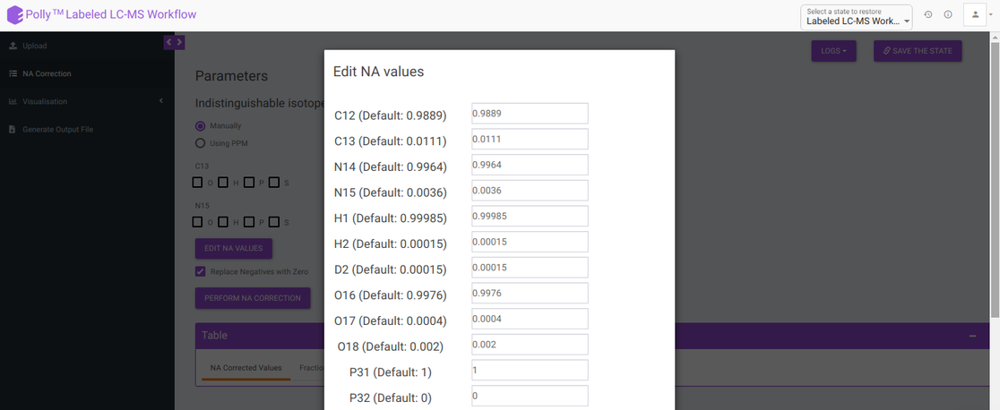
- Replace negatives with zero: Sometimes negative intensities arise which can be replaced with zero. This option is selected by default.
After all parameters have been decided click on Perform NA Correction. Once NA correction has been performed, the output will be displayed in in a tabular format as shown in Figure 7. There are three sections on this interface; NA Corrected Values, Fractional Enrichment and Merged Output. The first two sections only display the NA corrected values and fractional enrichment respectively as shown in Figure 7 and Figure 8 whereas the Third section combines these information to provide you with a single file with the entire information as shown in Figure 9. A detailed description of the merged output file is provided below.
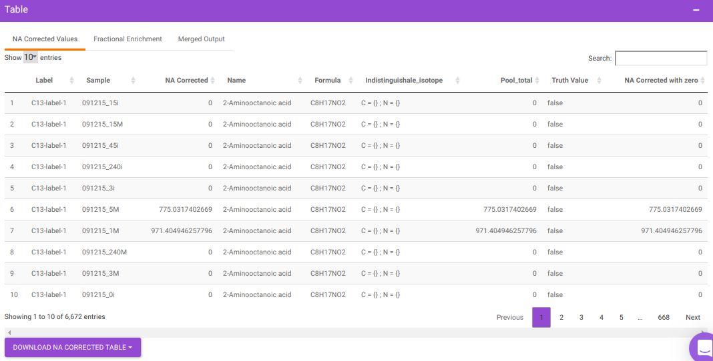
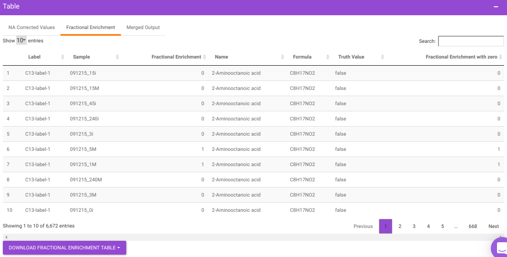
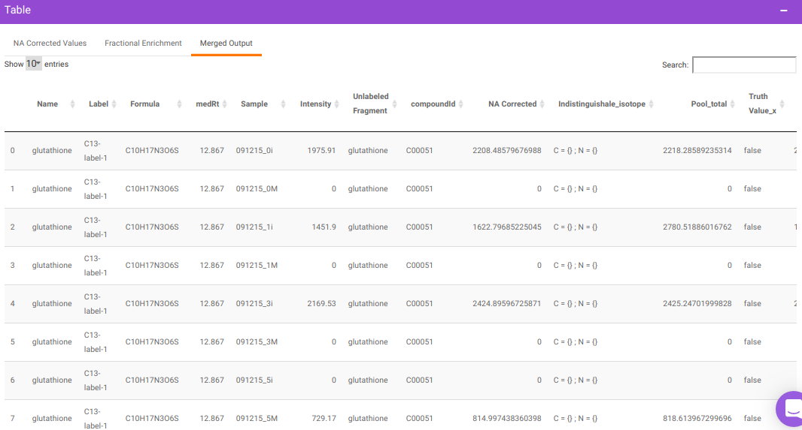
where,
- Name is Name of the metabolite
- Label is Label information
- Formula is Chemical formula
- Sample is Sample names
- Intensity is Raw intensities
- NA Corrected is NA corrected intensities
- NA Corrected with zero is NA corrected intensities with negative intensities replaced with zero
- Indistinguishable isotopes is List of indistinguishable isotopes for the particular metabolite Pool total is Pool total of a metabolite in a sample
- Fractional Enrichment is Fractional enrichment calculated after NA Correction has been done
- Fractional Enrichment with zero is Negative values are replaced with zero
- compoundid is KEGG or HMDB ID of the metabolites as specified oin the input file
Visualization
The visualization tab provides fractional enrichment, pool total and NA corrected intensity plots that are generated according to the metabolite and quantification type specified before.
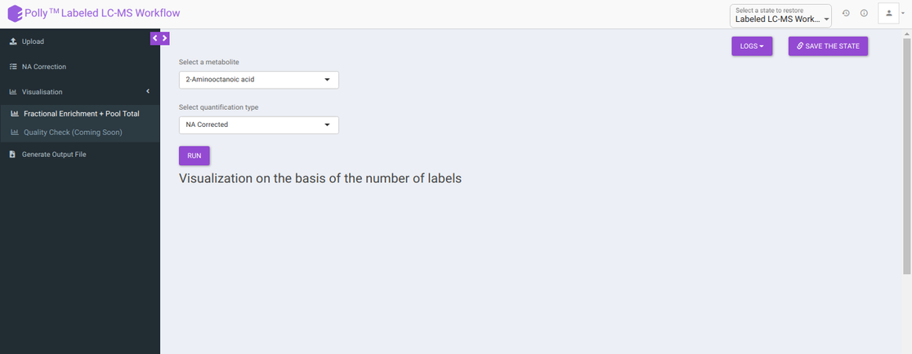
To generate visualizations, select a metabolite using the drop down that contains metabolites present in the intensity file uploaded and a quantification type from Intensity, NA Corrected, NA Corrected with zero, Fractional Enrichment and Fractional Enrichment with zero. After this, click on Run to get the selected visualization.
- Visualization on the basis of the number of labels shows all the available labels of a metabolite based on the quantification type selected across cohorts.
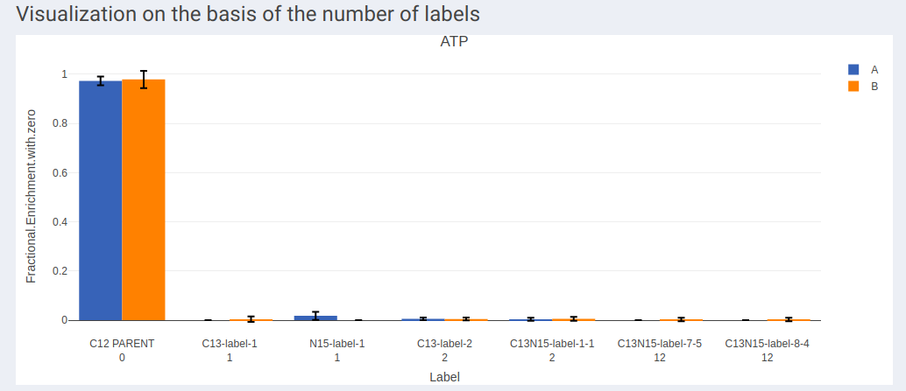
- In case of dual labeled data, plots for each element can be visualized individually as shown in Figure 13 and Figure 14.
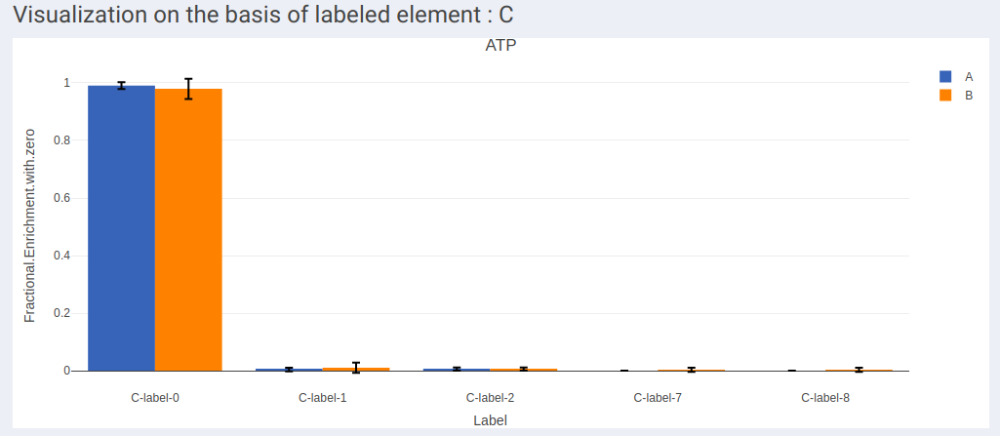
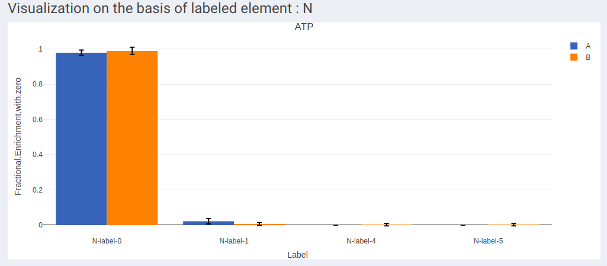
- Visualization of labels in stacked plot shows comparison between different labels present across the samples. Each bar in the chart represents the sample and the segments in the bar represent different isotopic labels of selected metabolite.
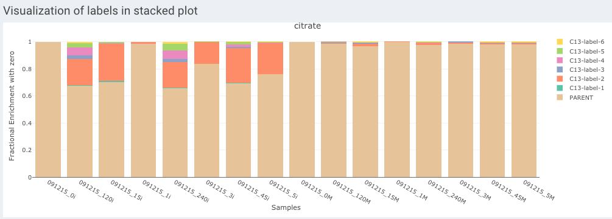
- Visualization on the basis of pool totals shows the pool totals plot for the selected metabolite.
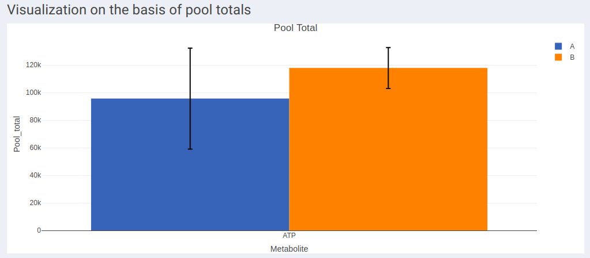
Note:
- The pool total plot will be shown regardless of the quantification type selection.
Generate Output File
This tab allows you to generate the output workbook which consists of the Raw Intensities, Raw Abundances, Fractional Contribution and Corrected Isotopologues in four different worksheets where the metabolites belonging to a particular pathway are grouped together based on the metabolite-pathway mapping provided in the Library File uploaded. The various options available are provided below:
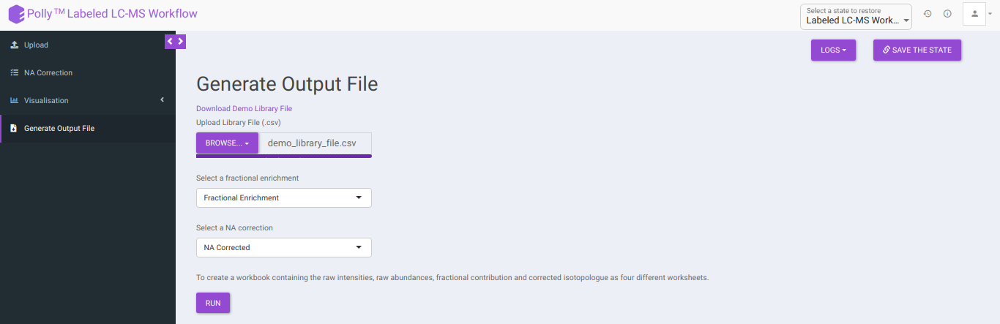
-
Download Demo Library File: Clicking on this would download the demo library file containing the metabolite and pathway mapping.
-
Upload Library File (.csv): The library file contains metabolite to pathway mapping information such as name of metabolite, pathway identifiers as supercategory and subcategory as shown in Figure 16. This file should be in .csv format. A detailed description of this file is provided below.
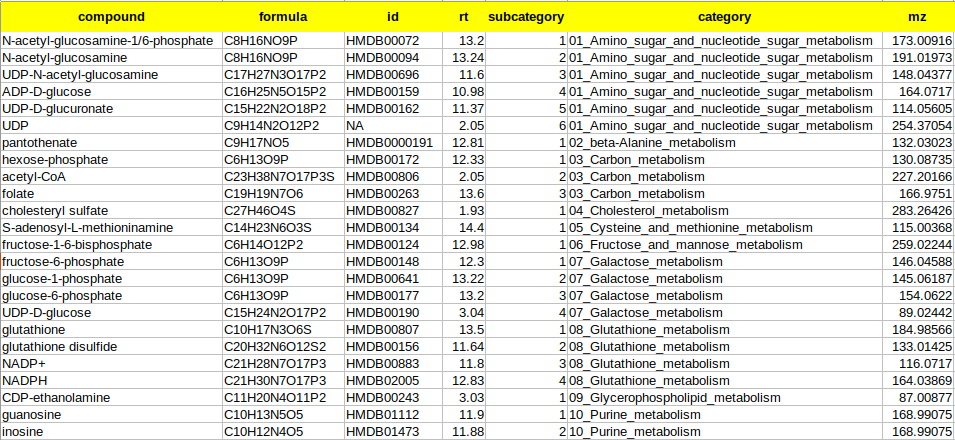
where,
- compound is the column that contains the names of the metabolites as in the El-MAVEN output
- formula is the column that contains the elemental formula of the metabolites
- id is the column that contains the compound ids of the metabolites
- rt is the column that contains the retention times of the metabolites
- mz is the column that contains the mzs of the metabolites
- category is the column that contains the pathway name to which the metabolite belongs to. The entries should ideally be pathwaynumber_pathwayname. Example: 01_Glycolysis
- subcategory is the column that contains the pathway number according to the Supercategory column followed by the metabolite number. Example: 9 for glutathione.
Select whether to proceed with Fractional Enrichment or Fractional Enrichment with zero or NA Corrected or NA Corrected with zero values using Select a fractional enrichment and Select a NA correction drop down.
Clicking on Run will generate a workbook that consists of the worksheets rawIntensities, rawAbundances, CorrectedIsotopologues and FracContribution with entries for all the metabolite isotopologues across different samples. Further, all the metabolite isotopologues are grouped based on the pathway they belong to (information provided in the library file).
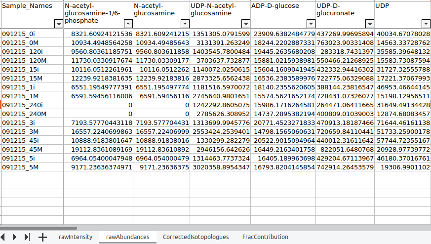
Details of the App
Corna, the algorithm used for NA correction has the ability to auto-detect indistinguishable isotopes in experiments with dual tracers. Some high-resolution mass spectrometer instruments are able to distinguish isotopes like 13C from 15N. The packages available for performing natural abundance correction on these data assume infinite resolution, which means that it is assumed that if 13C can be resolved from 15N at all masses and it can also be resolved from other isotopes like 2D. However, this assumption becomes invalid as the resolution of the machine varies with the mass of the metabolite. Corna does not assume ultra-high resolution and corrects for partial indistinguishability in the data.
- Fractional enrichment:
Fractional enrichment is calculated for each label corresponding to every metabolite in a sample using the formula:
Fractional enrichment = corrected intensity of a label / sum of corrected intensities for all labels
- Pool total:
Sum total of corrected intensities of every isotopologue for each metabolite in a sample using the formula:
pool total of a metabolite in a sample = sum (all corrected intensities for a metabolite)
-
Calculations in the output workbook:
-
rawIntensities: It consists of raw intensity values obtained from the NA Corrected output.
-
rawAbundances: It consists of the pool total values obtained from the NA Corrected output.
-
CorrectedIsotopologues: It consists of the fractional enrichment values obtained from the NA Corrected output in percentage
-
FracContribution: It consists of the fractional contribution of the labelled carbons. It is calculated by the the following formula:
- Fractional contribution = Sum(Label * Fractional Enrichment)/ total number of carbons. Eg: for glycine, fractional contribution = (0 * FE0 + 1 * FE1 + 2 * FE2)/2, where FE = Fractional Enrichment
-
Videos
References
-
Midani FS, Wynn ML, Schnell S. The importance of accurately correcting for the natural abundance of stable isotopes. Anal Biochem. 2017;520:27–43. doi:10.1016/j.ab.2016.12.011
-
Lide, D. R., “CRC Handbook of Chemistry and Physics (83rd ed.). Boca Raton”, FL: CRC Press. ISBN 0-8493-0483-0, 2002.
-
Moseley H., “Correcting for the effects of natural abundance in stable isotope resolved metabolomics experiments involving ultra-high resolution mass spectrometry”,BMC Bioinformatics, 2010, 11:139.